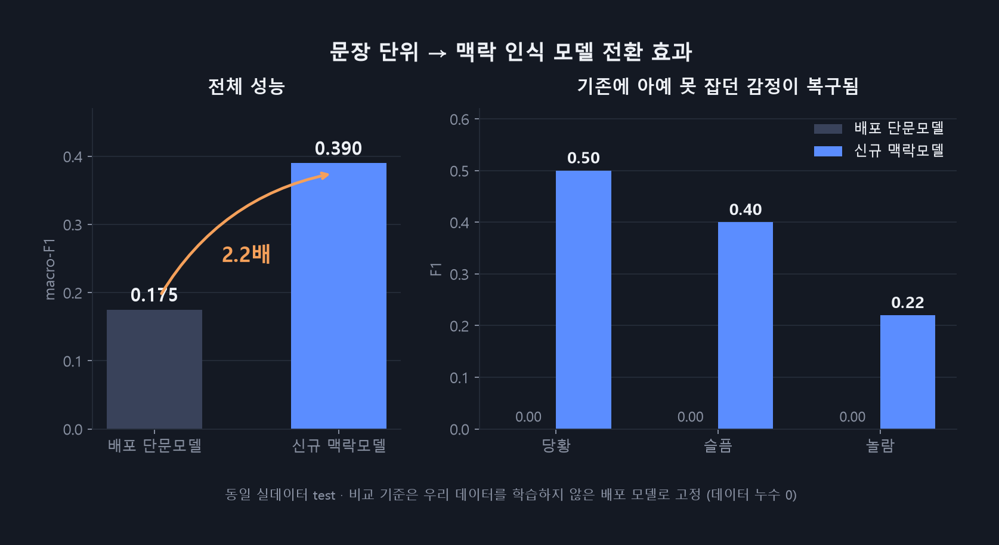
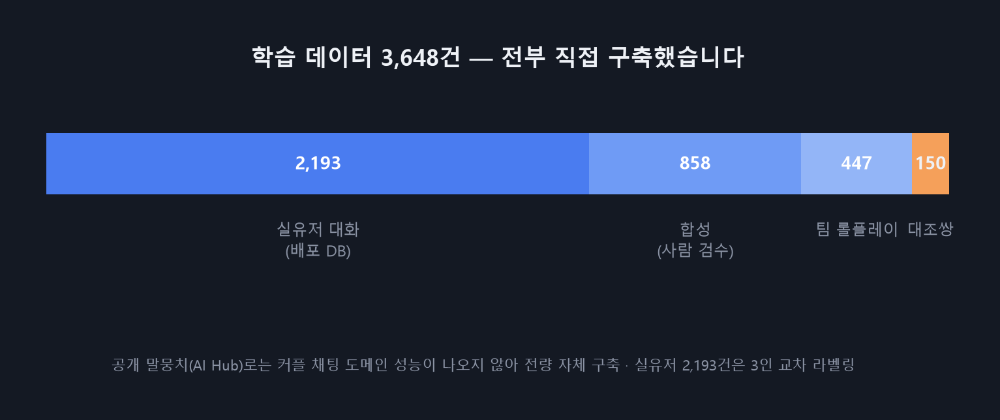
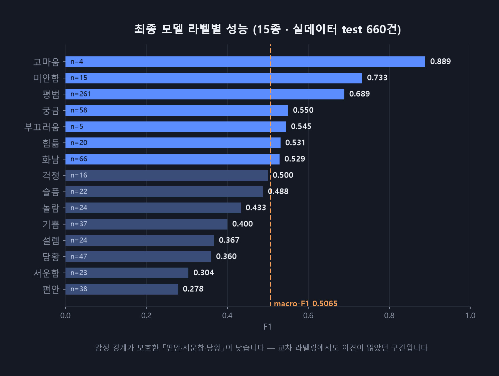
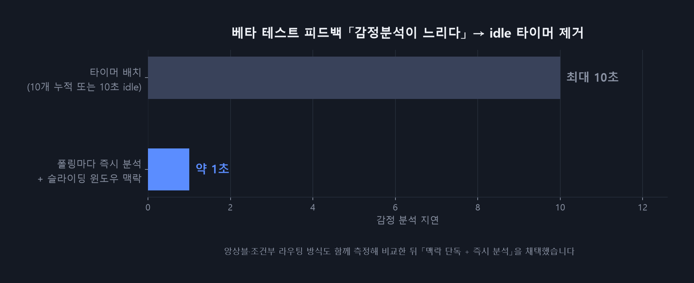

대화 속 감정을 AI가 분석해 보여주는 커플 메신저입니다. 문장 단위 감정 분류를 맥락 인식 모델로 재설계해 실제 대화 정확도를 2.2배 개선했고, 백엔드에서는 타이머 배치를 실시간 처리로 전환해 응답 지연을 10초에서 약 1초로 줄였습니다.
서비스 시연 영상 — 재생 버튼을 누르면 소리와 함께 재생됩니다. 배포 서버는 2026년 8월 10일 운영이 종료돼, 동작은 이 영상과 랜딩페이지에서 확인하실 수 있습니다.
텍스트 대화에는 표정·억양 같은 비언어적 단서가 없습니다. 커뮤니케이션 이론의 단서탈락관점(cues-filtered-out perspective) 은 이 단서 결핍 때문에 상대가 전하려는 정서적 의도를 파악하기 어려워진다고 설명합니다.
커플이 1:1로 대화하는 메신저를 기본으로, 대화의 감정을 15종으로 분류해 실시간으로 표시합니다. 여기에 커플룸 단위의 사진 앨범, 오늘의 기분·일정·한 줄 일기, 감정 흐름 대시보드를 붙였습니다.
6인 팀 프로젝트입니다. 아래가 본인이 담당한 부분이며, 나머지는 팀원들이 맡았습니다.
| 파트 | 담당 내용 |
|---|---|
| AI 감정 분류 모델 | 전 과정 단독 — 라벨 체계 설계 · 데이터 3,648건 구축 · 학습 · 평가 체계 · 추론 서버 · HF 배포 |
| 인증 (auth) | 3단계 회원가입(이메일 인증 선행) · JWT Access/Refresh 분리 · Google 소셜 로그인 · SMTP 발송 |
| 회원 (member) | app_user 엔티티 · 상태 관리 · 소프트 탈퇴 · 마이페이지 · 동시성 제어 |
| 앨범 (album) | 커플룸 스코프 · FileStorage 저장소 추상화 · 소유권 검증 · /photos 4개 엔드포인트 |
| 감정분석 실시간화 | 팀원이 구현한 배치 파이프라인을 idle 타이머 제거 + 폴링마다 즉시 분석으로 전환 |
감정분석 파이프라인의 초기 구현은 팀원이 맡았고, 본인은 AI 서버와의 계약(스키마·15라벨)을 고정하고 배치 → 실시간 전환을 담당했습니다.
배정된 역할은 백엔드였습니다. 팀에 AI 담당이 따로 있었지만 모델이 서비스에 쓸 수 있는 수준으로 나오지 않았습니다. 감정 분석은 이 서비스의 핵심이라 그것이 없으면 제품이 성립하지 않았습니다.
마감 약 1주일 전, 백엔드 담당 도메인을 마친 뒤 제가 하겠다고 나섰습니다.
당시 모델 학습·파인튜닝 경험이 없었습니다. 그때까지 다룬 것은 Vision(YOLOv8)과 음성(SVC)이었고, 텍스트 분류 모델을 직접 학습해본 적이 없었습니다. 자신 있는 상태가 아니었지만, 남은 1주일 동안 과거에 배운 것을 되살려 모델을 만들었습니다.
일반적인 감정 분류에 관계 신호 축을 따로 설계했습니다. 커플 대화에서는 감정의 긍부정보다 상대에게 무엇을 전하려는 발화인지가 더 중요한 경우가 많다고 판단했습니다.
| 분류 | 라벨 |
|---|---|
| 긍정 | 기쁨 · 설렘 · 편안 |
| 중립 | 걱정 · 놀람 · 평범 · 부끄러움 · 궁금 |
| 부정 | 슬픔 · 화남 · 당황 · 힘듦 |
| 관계 신호 | 고마움 · 미안함 · 서운함 |
| 차수 | 학습 데이터 | 결과 |
|---|---|---|
| 1차 | AI Hub 감성대화 말뭉치를 15라벨로 변환 + 합성 보강 | gold셋 0.73 / 실제 대화 흐름 0.175 |
| 2차 | 팀원들과 15감정 롤플레잉 대화를 직접 구축, 한 줄씩 라벨링 | 성능 상승, 그러나 맥락을 못 잡음 |
| 3차 | 라벨링 방식 전환 — 앞 10개 발화 + 마지막 1줄 단위 | macro-F1 0.39 (1차 대비 2.2배) |
| 4차 | 테스트 서버 배포 → 291명 실사용 → 유저 로그 재라벨링 | 최종 모델 → HuggingFace 공개 |
커플 문장 gold셋 153문장에서 macro-F1 0.73 을 기록했고, 이 수치로 배포했습니다. 그런데 실제 대화 흐름에 적용하자 0.175로 급락했습니다.
기존에는 대화를 한 줄씩 보고 라벨링했습니다. 그러나 실제 대화에서 감정은 앞선 흐름이 결정합니다.
"됐어" 는 화남일 수도 편안일 수도 있고, "괜찮아" 는 편안일 수도 서운함일 수도 있습니다.
직전 10개 발화를 묶어 맥락을 파악한 뒤 대상 문장의 감정을 판단하는 방식으로 전환했습니다. 같은 문장이라도 흐름에 따라 감정이 달라진다는 사실을 모델 구조가 아니라 라벨 단계부터 반영한 것이 핵심 전환점이었습니다.
학습·추론·백엔드 전송 형식을 모두 문장쌍으로 일치시켰습니다
[CLS] 맥락(최대 10발화) [SEP] 대상 문장 [SEP]
tokenizer(context, target, truncation="longest_first", max_length=128)

감정 단어가 문장에 직접 있으면(예: "짜증나") 모델이 맥락을 보지 않고
그 키워드만으로 판단하는 지름길 학습(shortcut) 이 생깁니다.
맥락을 넣어도 모델이 무시하면 구조 변경이 무의미합니다.
그래서 같은 문장이 앞선 맥락에 따라 다른 감정을 갖는 쌍을 만들었습니다. 문장만으로는 두 샘플을 구분할 수 없으므로 맥락을 봐야만 손실이 줄어듭니다. 대조쌍은 학습 전용으로만 쓰고 평가에는 넣지 않았습니다.
3차 모델로 테스트 서버를 열었고 291명이 가입해 이용했습니다. 여기서 얻은 것이 가장 좋은 학습 데이터였습니다. 사용자들이 실제로 주고받은 대화 로그를 저장해 팀원들과 다시 라벨링하고, 그 데이터로 재학습한 모델이 최종 결과물이 됐습니다.

eval_report.txt 실측값입니다.
15종 다중분류에서 랜덤 추측의 macro-F1은 약 0.067 수준입니다.
학습한 모델을 서버에 직접 올리는 대신, HuggingFace Hub에 올리고 서버가 기동 시 받아 쓰는 구조를 택했습니다.
| 인프라에 모델 직접 배치 | HuggingFace에서 받아 쓰기 (채택) |
|---|---|
| 모델을 바꿀 때마다 배포 파이프라인을 거쳐야 함 | .env 의 모델 경로만 바꾸고 재시작 |
| 서버 이미지가 모델 크기만큼 무거워짐 | 서버 이미지는 코드만 |
| 모델과 코드의 생애주기가 묶임 | 분리됨 — 이전 경로로 되돌리면 롤백 완료 |
1주일 안에 모델을 4차까지 갈아끼워야 했으므로 교체 비용을 낮추는 것이 가장 중요한 요구였습니다. 이 판단 덕에 베타 테스트 중 모델 교체가 안전한 작업이 됐습니다.
기분나빠(붙여 쓴 표기)가 오분류되는 것을 발견했습니다. 원인은 subword 토크나이저였습니다.
띄어 쓴 기분 나빠와 토큰 분해가 달라져 학습하지 않은 표기가 됩니다.
먼저 데이터 증강을 시도했지만 학습에 포함하지 않은 다른 붙임 표기는 여전히 못 잡았습니다 — 증강은 본 것만 커버합니다. 추론 전 띄어쓰기 교정(kiwipiepy) 으로 입력을 정규화해 재학습 없이 서버 코드 변경만으로 해결했습니다.
초기 구현은 "10개 누적 또는 10초 idle" 배치였습니다. 메시지를 모아 한 번에 분석하면 AI 서버 호출을 줄일 수 있습니다. 그런데 대화가 뜸하면 10개가 모이지 않고, idle 타이머가 만료될 때까지 최대 10초를 기다려야 했습니다. 실제로 베타 테스트에서 "감정분석이 느리다" 는 피드백을 받았습니다.

POST /analyze
{
"context": [{"speaker": "A", "text": "오늘 약속 취소됐어"}], // 최대 10개, 읽기전용
"target": [{"message_id": 101, "speaker": "B", "text": "됐어"}]
}
→ {"101": {"emotion": "서운함"}} // 응답 개수는 항상 target 개수와 일치스키마와 15라벨을 고정해 모델을 교체 가능한 구성요소로 취급했습니다. 맥락 모델을 배포할 때 백엔드 코드 변경이 필요 없었고, 무중단 롤백이 가능했습니다.
| 도메인 | 내용 |
|---|---|
| 인증 |
이메일 인증을 선행하는 3단계 회원가입 — 인증 완료 후에만 회원 레코드 생성 ·
코드는 SecureRandom 6자리, Redis TTL 관리(코드 5분 / 인증완료 30분)JWT Access/Refresh 분리 발급, Refresh만 Redis에 저장 — 재발급 시 저장값과 대조해 탈취·로그아웃 토큰 차단(토큰 회수 수단 확보) Google 소셜 로그인 — ID 토큰을 서버가 tokeninfo로 검증 + aud 일치 확인,
client secret 불필요계정 열거 방지 — 로그인 실패를 "이메일 없음 / 비번 틀림" 구분 없이 동일 응답 |
| 회원 |
app_user 엔티티 설계 · 상태 관리(ACTIVE/INACTIVE/WITHDRAWN) ·
탈퇴는 soft delete + refresh 삭제상태 변경을 setter 대신 의미 메서드( verifyEmail / changePassword / withdraw)로 캡슐화동시성 제어 — PESSIMISTIC_WRITE 락으로 커플 초대방 동시 생성 방지
|
| 앨범 |
커플룸 단위 스코프 · 소유권 검증 · /photos 업로드·조회·삭제·메모FileStorage 인터페이스로 저장소 추상화 — DB에는 전체 URL이 아니라
key(yyyy/MM/dd/{uuid}.ext)만 저장하고 응답 시 prefix를 조립해,
저장소를 옮겨도 데이터를 고치지 않습니다
|
[React Client]
│ REST / JWT ↕ WebSocket (STOMP)
[Spring Boot] ── Redis (채팅 이벤트 전달 · Refresh TTL)
│ ── MySQL (회원 · 커플방 · 채팅 · 분석 결과)
│ 맥락 최대 10개 + 대상 문장
[FastAPI + KcELECTRA] 감정 15종 분류2026.08.05 ~ 08.07, 291명(약 145쌍) 참여 · 설문 응답 45명.
| 항목 | 결과 |
|---|---|
| 채팅 기능 편리성 | 4.56 / 5 |
| 감정 라벨·아이콘 이해도 | 4.40 / 5 |
| 감정 분석 결과 절반 이상 일치 | 66.7% |
| 지속 사용 의향 | 3.71 / 5 |
| 지인 추천 의향 | 7.29 / 10 |
1차 테스트 피드백 6건을 수집해 개선에 반영했고, 그중 "감정분석이 느림" 과 "문맥을 잘 이해하지 못함" 이 위에 적은 실시간 전환과 맥락 모델 작업으로 직접 연결됐습니다.
| 한계 | 내용 |
|---|---|
| 낮은 F1 라벨 | 편안·서운함·당황 이 0.28~0.36으로 낮습니다.
사람도 라벨이 갈리는 구간이고, 교차 라벨링에서도 이견이 많았습니다 |
| 평범 라벨 편중 | test의 40%(261/660)가 평범입니다. 실제 대화 분포를 반영한 것이지만,
macro-F1이 소수 라벨에 민감하다는 점을 감안해 읽어야 합니다 |
| 도메인 제약 | 커플 간 1:1 채팅체를 전제로 학습했습니다. 다른 도메인에서는 성능을 보장할 수 없습니다 |
| 모델 절대 성능 | macro-F1 0.5 수준은 실용 서비스로 쓰기에 충분하다고 말하기 어렵습니다. 「누수 없는 기준에서 측정한 개선폭」 에 의미를 두었습니다 |